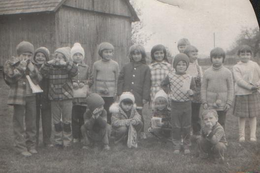

Zdjęcia szkolne z lat 80-tych z kolekcji Moniki Mróz

"O ile dobrze pamiętam to zdjęcie było robione na podwórku pana Starzyka, niedaleko od domu, gdzie
odbywały się lekcje religii. Tak na marginesie to tego domu już dawno nie ma... Ale stodoła dalej stoi
:). Zdjęcie zrobione było w marcu 1980 r. Niezła ekipa :) Od lewej stoją: Robert, Bronek, Marek, Halina,
Danka, Ela, Marzena, z tyłu Janusz, Gośka, Wojtek, Marysia i Bożena. W przysiadzie: Adam, Aśka, Monika i
Jędruś. Trochę rocznikowo pomieszane (od 1974, 1975, 1976, 1977).Fajne z nasz przedszkolaki były ..."
Monika
Ks. Zbigniew Wolak z klasa na lekcji religii
Od lewej: Tereska, Lucynka, Agatka, ks. Zbyszek, Monika, Lucynka, Daruś.
"To chyba jedyne zdjęcie na którym jesteśmy wszyscy :). Na baczność: Asia, Tereska, Grześ, Lucynka,
Anetka i druga Lucynka. W przysiadzie od lewej: Piotruś, Agniesia, Agatka, Monika, Adaś i Daruś. "
Monika
Zdjęcia przesłała Moniki Mróz.